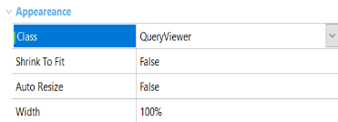
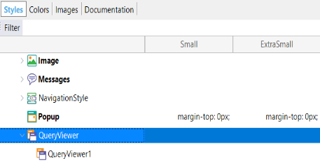
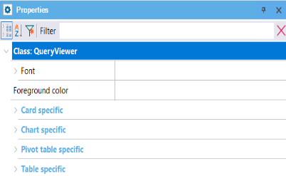

To customize the QueryViewer control you need to associate a class to it (Appearence section).

Then, open the associated Web Theme object and locate the QueryViewer node matching the class you selected:

Depending on the control output Type (Table, Pivot Table, Chart or Card) property, you will find a section to set the desired UI properties:

This customization is available since GeneXus 15 upgrade 12.
HowTo customize Map visualization in QueryViewer control
| Backlinks | |
| QueryViewer control compatibility | Toc:Reporting in GeneXus |